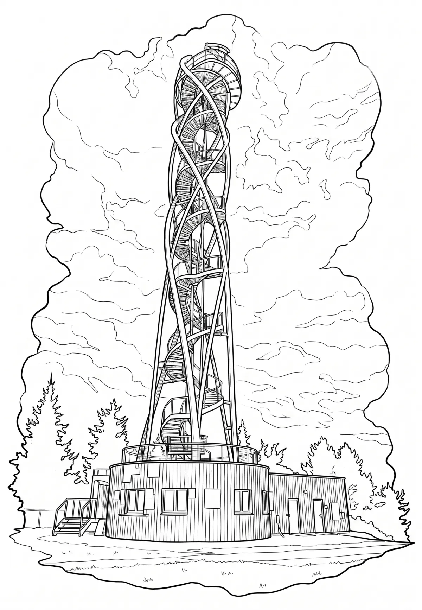

Rozhledna Fajtův kopec
Rozhledna Fajtův kopec (nebo také rozhledna na Fajtově kopci) je rozhledna ve Velkém Meziříčí. Je ve tvaru šroubovice DNA, stojí na železobetonových pilotech zapuštěných 16 metrů do země, celková hmotnost rozhledny je 42 tun. Přízemní část rozhledny je tvořena kruhovou a obdélnou stavbou, kde je pokladna sjezdovky, toalety a zázemí pro provozovatele sjezdovky.
Více na Wikipedii